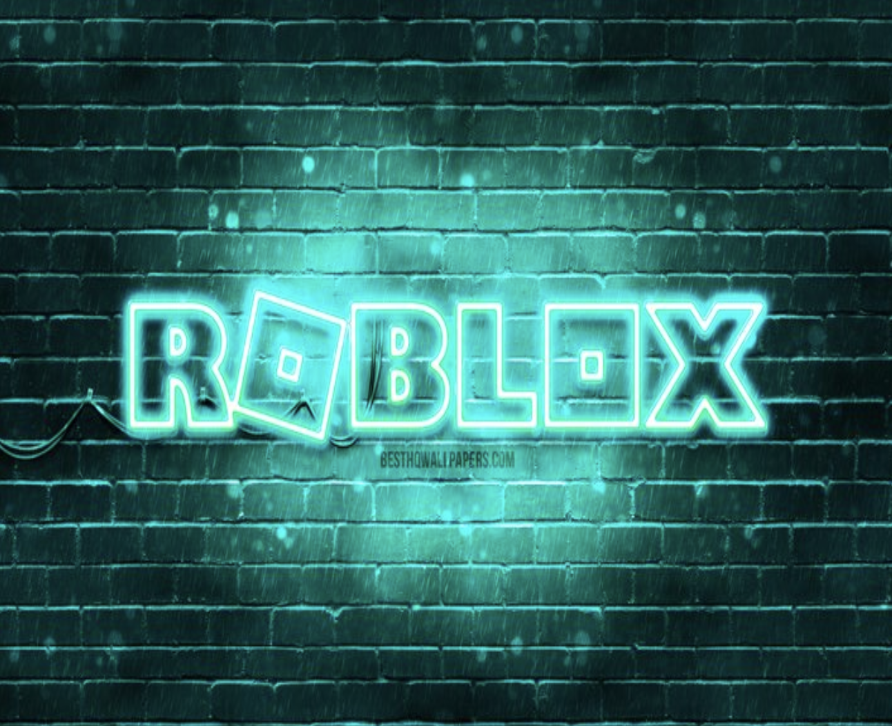
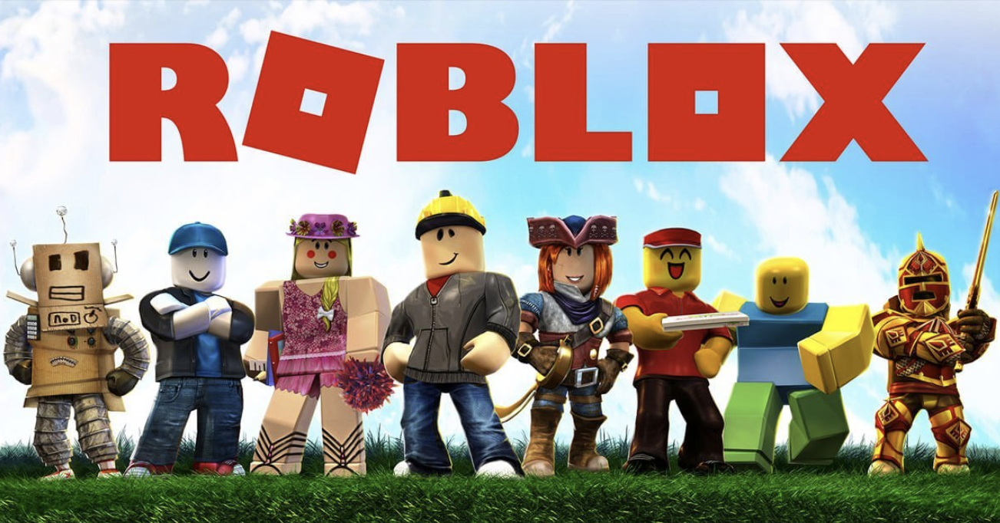
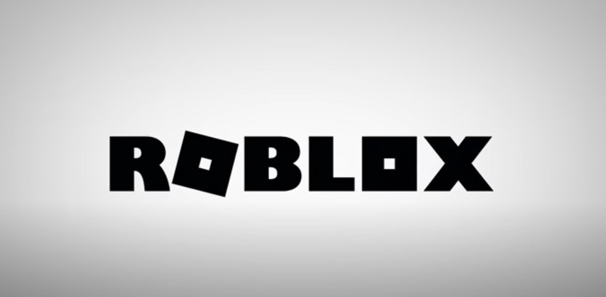
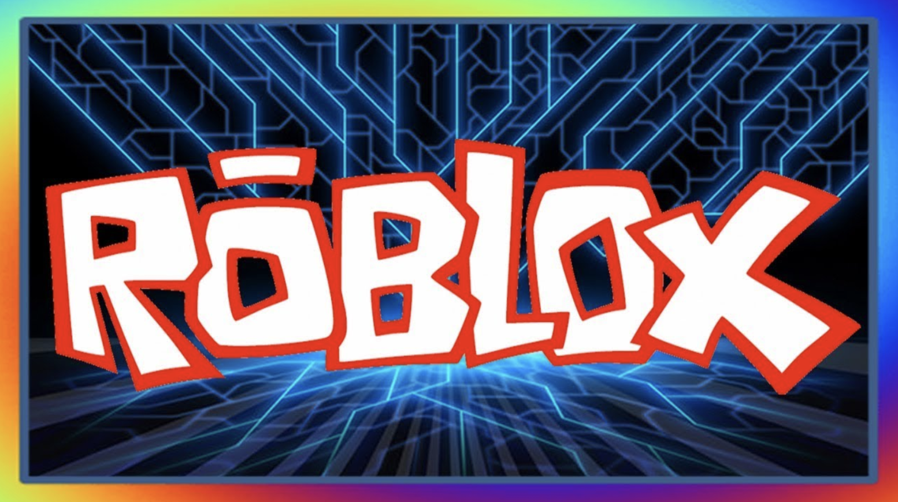
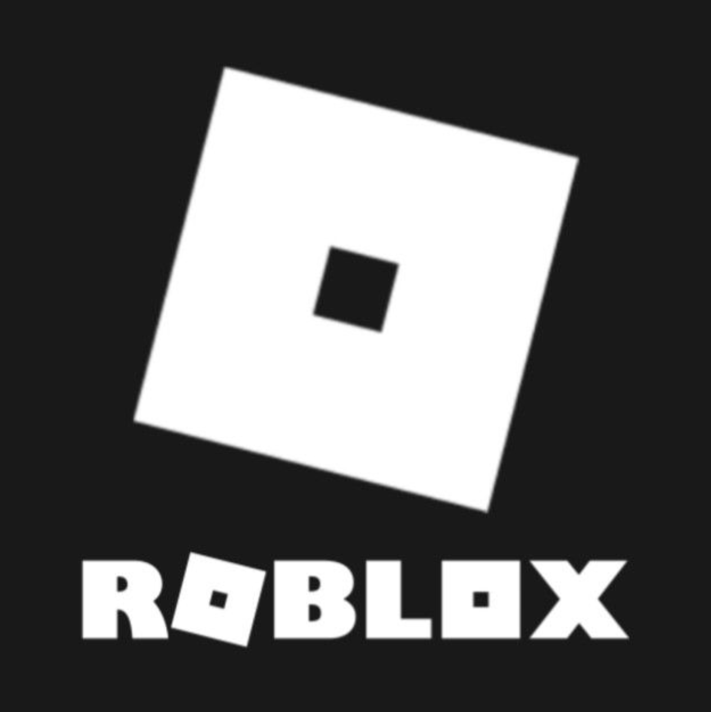

Roblox
Colegio Francés Hidalgo, Axel y Roblox
Roblox además de ser una plataforma de juegos tiene trillones y trillones de juegos.


Roblox
¿Quién lo creó?

Roblox
David baczucki en 2006.
¿Cuándo salió?

Roblox
Roblox salió en el 2006.
¿Qué puedes hacer?
Puedes crear juegos para que los demás los jueguen o tú puedes jugar los juegos que los demás crean.

Roblox
Referencias
- https://www.bing.com/ck/a?!&&p=d284a8058b20a60ef74a631acc59d9862bf462b55611e9958a1f277c23eee3fbJmltdHM9MTY1NjUyNDE0NSZpZ3VpZD0yMzQ5YjJmNi1mODZkLTQ5ZTYtYTQwYi1iZWZkNGMyNzZjYjUmaW5zaWQ9NTE2NQ&ptn=3&fclid=e7ace0d9-f7d1-11ec-88c8-2fcc634e1b98&u=a1aHR0cHM6Ly93d3cucm9ibG94LmNvbS8&ntb=1